David Ernesto Rubio
Estudiante de Economía | Focalizado en Econometría y aprendizaje constante en el mundo del Data Science.
Análisis de datos con rigor econométrico
Bienvenido a mi repositorio. Acá encontrarás proyectos que he realizado que van desde modelos no lineales con regresiones lineales con y sin supuestos Gauss-Markov, modelos no lineales por medio del algoritmo Gauss-Newton, hasta regresiones logísticas para modelos default y combate de sobreajuste con el modelo LASSO.
Mis Proyectos de Data Science
Explora mis análisis y modelos implementados principalmente en R.
Estimación por regresión lineal múltiple (MCO), corrigiendo multicolinealidad, heteroscedasticidad y datos atípicos.
MCO
Akaike
Yohai
Ver Detalles Completos
Remuestreo de datos (Bootstrapping) para aproximar a la población sin asumir supuestos tradicionales.
Remuestreo
Bootstrap
Ver Detalles Completos
Regresión logística para evaluación de riesgo crediticio y predicción de incumplimiento de pago.
Logit
Probit
Cross-Validation
Ver Detalles Completos
Estimación de un modelo no lineal utilizando el algoritmo de Gauss-Newton para derivadas complejas.
No Lineal
Gauss-Newton
R
Ver Detalles Completos
Regularización de modelos para combatir el overfitting y selección automática de variables relevantes.
LASSO
Overfitting
Glmnet
Ver Detalles Completos
Estimación de efectos fijos y aleatorios para conjuntos de datos multidimensionales.
Panel Data
Efectos Fijos
Plm
Ver Detalles Completos
Volver a Proyectos
Modelo de precios de Toyota - Análisis Profundo
Este proyecto analiza el impacto de variables como kilometraje, año y tipo de combustible en el valor de reventa de autos Toyota.
Exploración de Datos (Head)
Visualización de las primeras filas del dataset para entender la estructura de las variables antes del modelado:
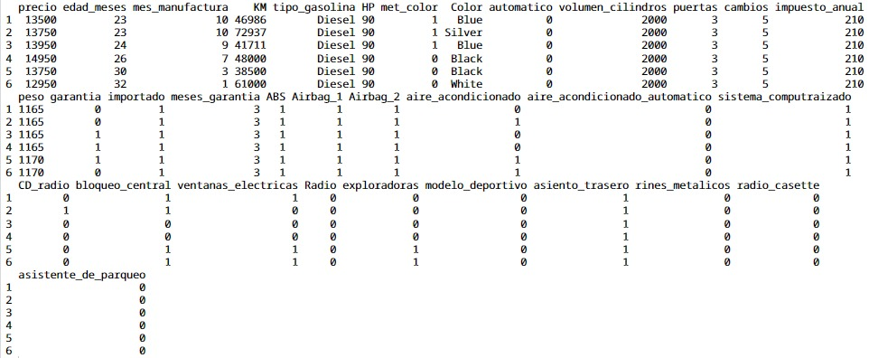
Figura 1: Muestra de datos importados desde Excel a R.
Especificación del Modelo Completo:
$$ \text{Precio}_i = \beta_0 + \beta_1 \text{Edad\_Meses}_i + \beta_2 \text{KM}_i + \beta_3 \text{HP}_i + \dots + \beta_{32} \text{Asistente\_Parqueo}_i + \epsilon_i $$
Nota: El modelo incluye 32 variables explicativas, abarcando características técnicas (HP, Cilindraje), seguridad (ABS, Airbags) y confort. Contamos con un total de 1436 observaciones.
Para esta primera estimación, presentamos el modelo sin realizar aún la validación exhaustiva de supuestos. Trabajamos bajo el marco de las propiedades de Gauss-Markov, asumiendo ausencia de multicolinealidad perfecta y errores homoscedásticos:
$$ E(\epsilon_i | X) = 0 \quad \text{y} \quad \text{Var}(\epsilon_i | X) = \sigma^2 $$
Bajo estos supuestos, aseguramos que nuestros estimadores MCO sean los MELI (Mejor Estimador Lineal Insesgado).
Resultados de la Estimación (Summary)
A continuación se detallan los coeficientes estimados, errores estándar y niveles de significancia:
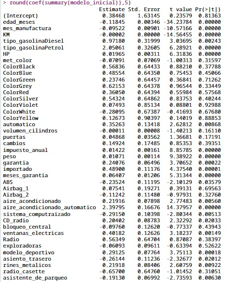
Figura 2: Salida oficial del comando summary(modelo) en R.
Interpretación Económica de algunos de los Coeficientes
Variables Continuas
- Edad (Meses): Por cada mes adicional de antigüedad, el precio disminuye en promedio $118.45, manteniendo el resto constante.
- KM: Por cada kilómetro adicional recorrido, el precio cae aproximadamente $0.02.
- HP (Caballos): Un incremento de un caballo de fuerza se traduce en un aumento promedio de $19.65 en el valor.
- Peso: Por cada kilogramo adicional de peso, el precio tiende a subir $10.71.
- Garantía (Meses): Por cada mes adicional de garantía, el valor sube en promedio $64.07.
Variables Categóricas (Dummies)
- Transmisión Automática: Un Toyota Corolla automático es, en promedio, $352.63 más costoso que uno manual, ceteris paribus.
- Tipo de Combustible (Petrol): Los autos a gasolina tienen un precio promedio superior en $2,050.61 respecto a la categoría de referencia.
- Aire Acondicionado Automático: Esta característica aporta un incremento sustancial de $2,397.95 al valor del vehículo.
Nota de Inferencia: Todas las interpretaciones se realizan bajo el supuesto Ceteris Paribus (manteniendo todo lo demás constante).
Pruebas de Hipótesis Individuales (α = 0.05)
Evaluamos si la variable tiene un impacto real en el precio mediante el siguiente contraste:
$$ H_0: \beta_j = 0 \quad \text{vs} \quad H_1: \beta_j \neq 0 $$
| Variable |
P-Valor (Pr > |t|) |
Regla de Decisión |
Conclusión |
| Edad Meses |
0.00000 |
p < 0.05 |
Rechazo H0 (Significativa) |
| KM |
0.00000 |
p < 0.05 |
Rechazo H0 (Significativa) |
| Met_Color |
0.31597 |
p > 0.05 |
No Rechazo H0 (No Sig.) |
| Automático |
0.00868 |
p < 0.05 |
Rechazo H0 (Significativa) |
| Airbag_1 |
0.69563 |
p > 0.05 |
No Rechazo H0 (No Sig.) |
Interpretación de la Bondad de Ajuste
El coeficiente de determinación $R^2$ de 0.9108 indica que el 91.08% de la variabilidad total del precio de los Toyota Corolla es explicada por el conjunto de variables incluidas en este modelo.
1. Multicolinealidad
La presencia de correlación lineal entre variables explicativas infla la varianza de los estimadores. En este modelo, variables como edad_meses, tipo_gasolina y Radio presentaban redundancia informativa.
Detección: Factor de Inflación de la Varianza (VIF)
Identificamos variables con $VIF \approx 5$, lo que indica una alta colinealidad.
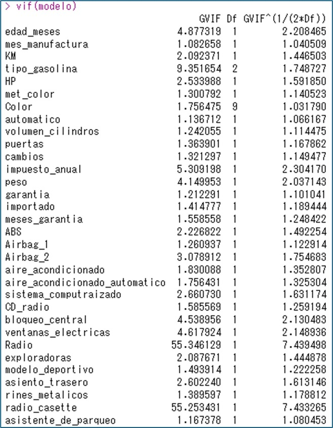
Figura 3: Salida de vif(modelo). Se observan valores críticos en variables de confort y motorización.
Corrección: Optimización por AIC (Stepwise)
Seleccionamos el modelo con el menor Criterio de Información de Akaike, eliminando 10 variables redundantes.
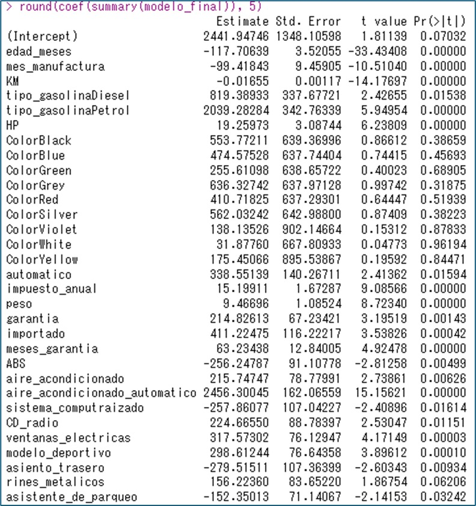
Figura 4: Estructura del modelo final tras la eliminación de variables no significativas y redundantes.
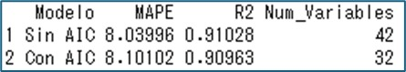
Validación cruzada: Al comparar el MAPE (Error Porcentual Absoluto Medio) entre el modelo inicial y el final, la precisión se mantuvo estable, demostrando que la eliminación de variables no afectó la capacidad predictiva.
2. Heteroscedasticidad
Este problema surge cuando la varianza de los errores no es constante a lo largo de las observaciones. En nuestro caso, la dispersión del precio tiende a aumentar en ciertos rangos, lo que invalida la inferencia clásica de las pruebas t y F.
Detección: Prueba de Breusch-Pagan
Ejecutamos la prueba formal donde $H_0$ es la homoscedasticidad. El p-valor obtenido ($2.2 \times 10^{-16}$) nos permite rechazar la hipótesis nula con total confianza.
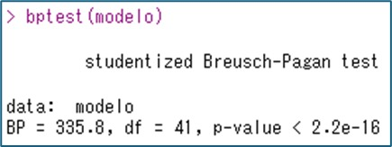
Figura 5: Resultado de bptest(modelo). La alta significancia confirma la varianza no constante.
Corrección: Errores Estándar Robustos (HC4)
Para corregir la subestimación de los errores, implementamos la matriz de covarianza tipo HC4 (Matriz Sándwich) mediante la función coeftest().
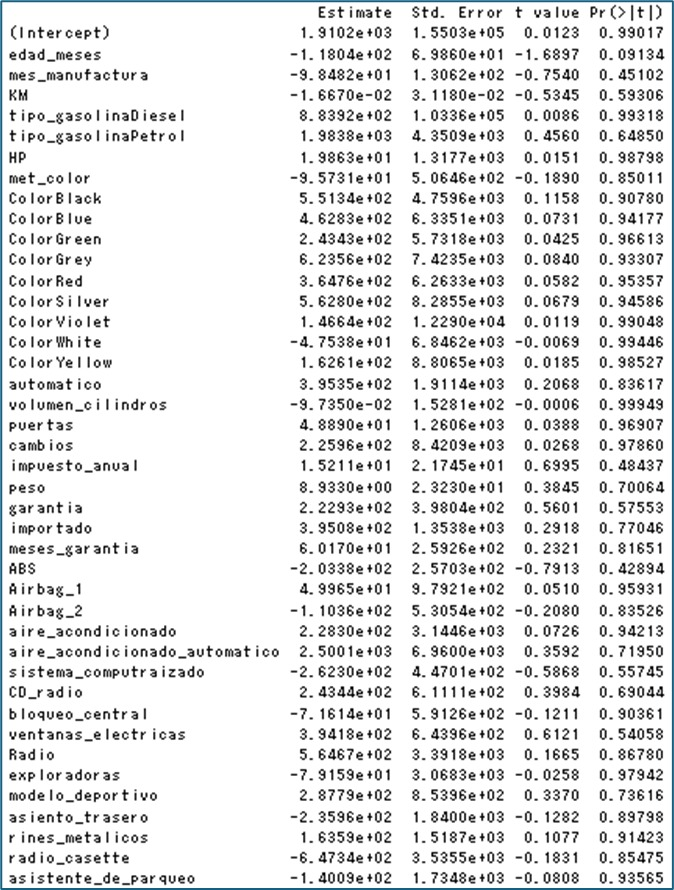
Figura 6: Coeficientes con errores estándar ajustados. Nótese el cambio en la significancia de algunas variables.
Nota de Inferencia: Al usar HC4, los errores estándar suelen ser más altos y realistas. Esto asegura que solo las variables genuinamente relacionadas con el precio sean consideradas significativas, evitando conclusiones falsas debido a la dispersión de los datos.
3. Valores Atípicos e Influyentes
Los outliers son observaciones que se alejan significativamente del patrón del resto de los datos, pudiendo sesgar los coeficientes y distorsionar las predicciones del modelo de precios.
Detección: Criterio de Distancia de Cook
Identificamos datos influyentes mediante una matriz lógica. Detectamos una Distancia de Cook de 48.4 (superior al umbral de 1), residuos absolutos mayores a 3 y hat-values superiores a 0.2.
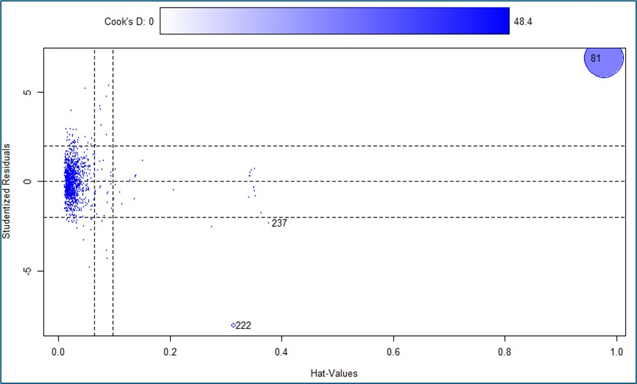
Figura 7: Identificación de observaciones influyentes y puntos de apalancamiento.
Corrección: Estimador Robusto de Yohai
En lugar de eliminar datos, utilizamos la función robustRegBS para aplicar el estimador de Yohai, el cual reduce automáticamente el peso de las observaciones atípicas en la estimación.
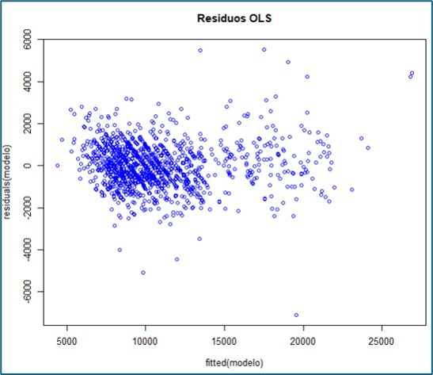
Modelo Original (MCO)
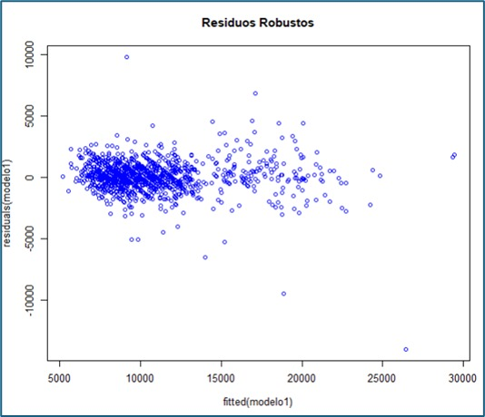
Modelo Robusto (Yohai)
Figura 8: Comparativa de residuos. El modelo robusto muestra una distribución mucho más estable y controlada.
Conclusión del Diagnóstico
Tras corregir la multicolinealidad (vía AIC), la heteroscedasticidad (vía HC4) y los datos atípicos (vía Yohai), hemos logrado un modelo que no solo tiene un alto poder explicativo, sino que también cumple con el rigor estadístico necesario para realizar inferencias confiables sobre el mercado de vehículos Toyota.
Código Implementado en R
library(readxl)
library(car)
library(lmtest)
library(sandwich)
install.packages("robustlm")
library(robustbase)
library(robustreg)
datos <- read_excel(file.choose())
datos <- data.frame(datos)
attach(datos)
set.seed(782003)
s <- sequence(1, nrow(datos), by=1)
r <- sample(s, size = 0.10*nrow(datos))
modelo <- lm(precio ~., datos[-r, ])
formula(modelo)
round(coef(summary(modelo)), 5)
vif(modelo)
modelo_final <- step(modelo)
round(coef(summary(modelo_final)), 5)
prediccion_1=predict(modelo, newdata = datos[r,])
prediccion_2=predict(modelo_final, newdata = datos[r,])
mape1=100*mean(abs(prediccion_1-datos[r,1])/datos[r,1])
mape2=100*mean(abs(prediccion_2-datos[r,1])/datos[r,1])
mape1;mape2
r_modelo <- summary(modelo)$r.squared
r_modelofinal <- summary(modelo_final)$r.squared
Mapes <- c(mape1, mape2)
Rcuadrados <- c(r_modelo, r_modelofinal)
tabla_comparativa <- data.frame(
Modelo = c("Sin AIC", "Con AIC"),
MAPE = round(c(mape1, mape2), 5),
R2 = round(c(r_modelo, r_modelofinal), 5),
Num_Variables = c(length(coef(modelo)), length(coef(modelo_final)))
)
tabla_comparativa
hist(precio, prob =TRUE, col = 'red')
bptest(modelo)
round(coeftest(modelo,vcov = vcovHC, type = "HC4"), 5)
influence.measures(modelo)
influence.measures(modelo)$is.inf
influencePlot(modelo,col='blue')
modelo1 <- robustreg(precio ~ ., data = datos[-r,],
control = lmrob.control(tuning.chi = 4.685,
max.it = 1000,
tol = 1e-5))
round(coef(summary(modelo1)), 5)
plot(fitted(modelo), residuals(modelo), main = "Residuos OLS", col = "blue")
plot(fitted(modelo1), residuals(modelo1), main = "Residuos Robustos", col = "blue")
Volver a Proyectos
Modelo de Precios de Vivienda - Inferencia Robusta vía Bootstrapping
Mediante remuestreos con reemplazo, estimaremos los errores estándar y construiremos intervalos de confianza robustos sin necesidad de asumir una distribución normal estricta de nuestros datos.
Modelo Inicial vs. Método de los Casos
Comparamos el modelo original (MCO) con el primer método de Bootstrap, que es el remuestreo de casos.
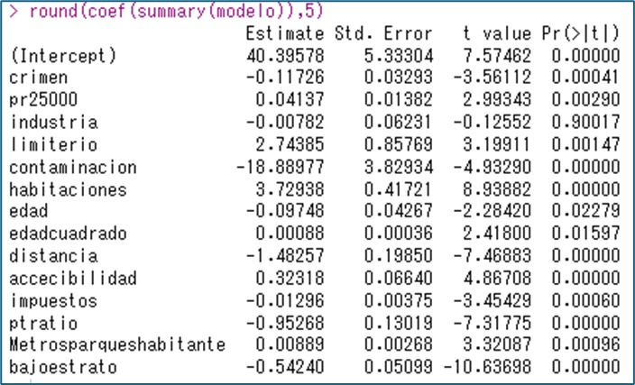
Figura 1: Summary del modelo inicial sin Bootstrap.
Aplicaremos el método de los casos (Método 1). Remuestreamos los datos de tal forma que, en cada iteración, el modelo se ajusta nuevamente. Utilizando 5000 réplicas, hallamos las estimaciones Bootstrap para los coeficientes y errores estándar:
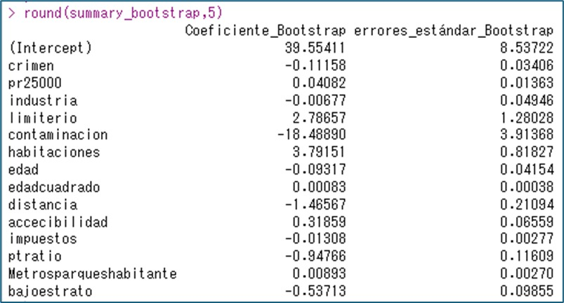
Figura 2: Summary del modelo con método de los casos.
Al comparar con el modelo inicial, observamos que el método Bootstrap estima coeficientes y errores estándar de forma muy cercana a MCO, pero con la ventaja de no requerir supuestos de normalidad.
Modelo Inicial vs. Método de los Residuales
En este segundo enfoque, remuestreamos los residuales para aproximarlos a los poblacionales. Este método asume homocedasticidad por diseño. Obtenemos los siguientes resultados con 5000 réplicas:
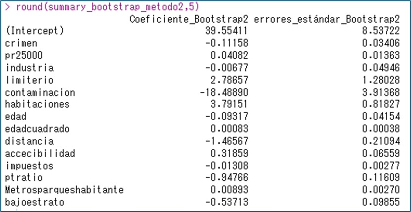
Figura 3: Summary del modelo con método de los residuales.
Existe una clara convergencia en los errores estándar entre ambos métodos. Finalmente, analizamos los intervalos de confianza para validar la significancia estadística:
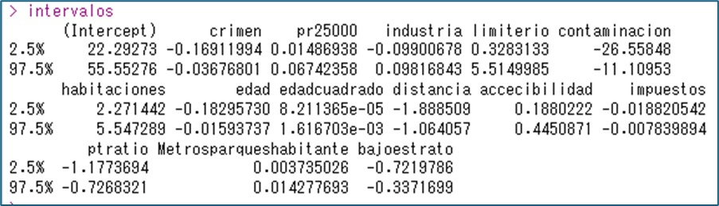
Figura 4: Intervalos de confianza con Bootstrap.
Visualización de la distribución de los estimadores (Nivel de significancia del 5%):
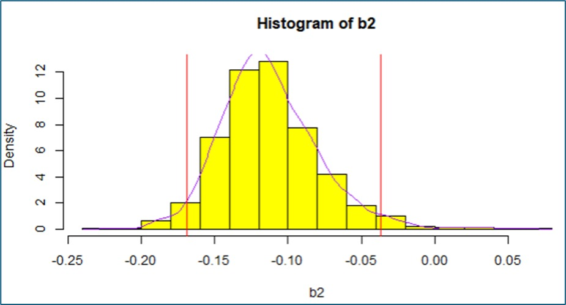
Figura 5: Histograma de los intervalos de confianza.
Dado que ningún intervalo de confianza incluye el valor cero, concluimos que todas las variables explicativas son estadísticamente significativas con un nivel de confianza del 95%.
Conclusión del método Bootstrap
Esta técnica demuestra que no dependemos de conocer la distribución poblacional ni de poseer muestras excesivamente grandes. El remuestreo nos permite generar inferencias sobre coeficientes y errores estándar con una precisión altamente robusta y fiable.
Código Implementado en R
library(readxl)
datos <- read_excel(file.choose())
datos <- data.frame(datos)
attach(datos)
# Modelo Original
modelo <- lm(valor ~ ., data = datos)
round(coef(summary(modelo)), 5)
# Método 1: Bootstrap de Casos
simulacion <- function(x){
r <- sample(1:nrow(datos), size = nrow(datos), replace = TRUE)
lm(valor ~ ., data = datos[r, ])$coef
}
B <- 5000
f <- replicate(B, simulacion())
f1 <- t(f) # Transponer para organizar por variable
colnames(f1) <- names(coef(modelo))
summary_bootstrap <- data.frame(
Coeficiente_Bootstrap = apply(f1, 2, mean),
Error_Estandar_Bootstrap = apply(f1, 2, sd)
)
round(summary_bootstrap, 5)
# Intervalos de Confianza
interi <- function(x) quantile(x, c(0.025, 0.975))
apply(f1, 2, interi)
# Método 2: Bootstrap de Residuales
e <- residuals(modelo)
simulacion_res <- function(){
eprima <- sample(e, size = length(e), replace = TRUE)
Yprima <- fitted(modelo) + eprima
return(coef(lm(Yprima ~ ., data = datos[, -which(names(datos) == "valor")])))
}
f2 <- replicate(B, simulacion_res())
f2_res <- t(f2)
round(apply(f2_res, 2, sd), 5)
# Visualización
b2 <- f1[, 2] # Ejemplo con segunda variable
hist(b2, col = 'yellow', prob = TRUE, main="Distribución Bootstrap")
lines(density(b2), col = 'purple', lwd = 2)
abline(v = quantile(b2, probs = c(0.025, 0.975)), col = 'red', lty = 2)
Volver a Proyectos
Modelo Churn (Retención de Clientes)
Modelo de regresión logística para predicción de deserción en servicios financieros.
1. Análisis Exploratorio y Preparación
Se analizó una base de datos de 4,835 observaciones. El objetivo es calcular la probabilidad de que un cliente abandone el servicio basándose en su perfil demográfico y comportamiento de consumo.
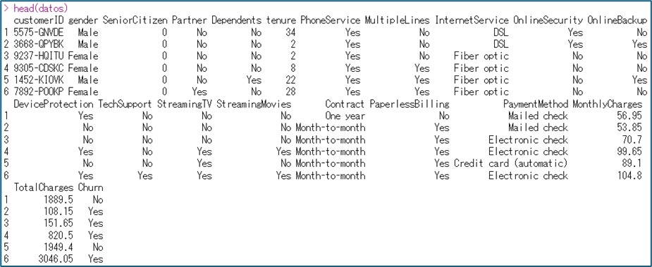
Figura 1: Estructura de los datos analizados.
2. Fundamento Matemático
Implementamos una Regresión Logística Binomial para transformar la combinación lineal de variables en una probabilidad entre 0 y 1:
$$p_i = \frac{e^{Z}}{1+e^{Z}}$$
$$Z = \beta_0 + \beta_1(\text{Tenure}) + \beta_2(\text{MonthlyCharges}) + \dots + \beta_n(X_n)$$
3. Estimación y Factores Clave
Tras entrenar el modelo, identificamos los "Drivers" o impulsores principales de la deserción:
Tenure (Antigüedad)
Relación inversa: a mayor lealtad temporal, el riesgo de fuga disminuye drásticamente.
Senior Citizen
Factor de riesgo: los adultos mayores muestran una probabilidad de cancelación superior al promedio.
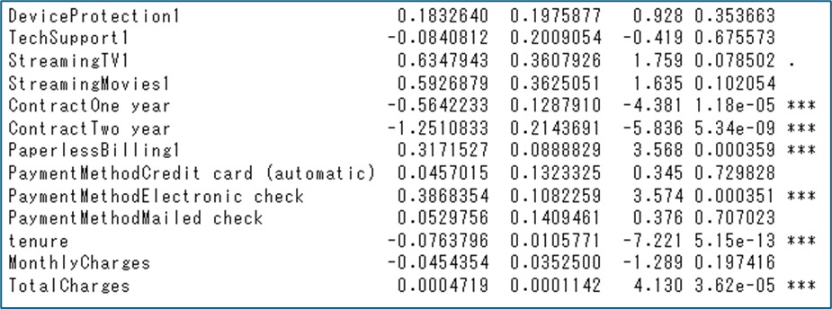
Figura 2: Coeficientes y niveles de significancia (p-values).
4. Evaluación de Capacidad Predictiva
El modelo presenta un AUC de 0.817, lo que indica una excelente capacidad de discriminación entre clientes fieles y desertores.
| Predicción / Real |
No Abandona |
Abandona |
| Clasificado 0 |
279 |
68 (FN) |
| Clasificado 1 |
45 (FP) |
90 |
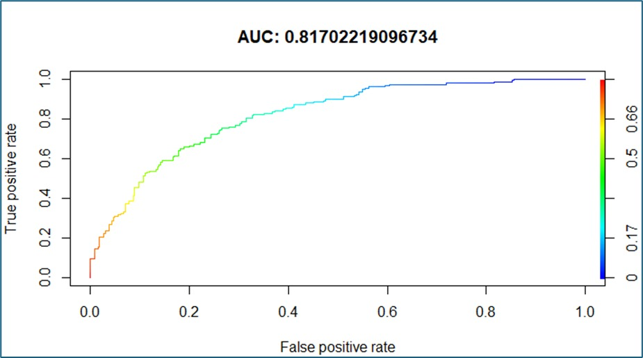
5. Optimización: Balanceo de Datos (SMOTE/Under-sampling)
Para corregir el sesgo hacia la clase mayoritaria, se realizó un balanceo 50/50. Este ajuste fue crítico para el negocio:
Mejora de Rendimiento
La sensibilidad (capacidad de detectar fugas reales) aumentó del 56.96% al 77.93%.
Código Implementado en R
# --- Preparación de Datos ---
datos <- read_excel(file.choose())
datos <- data.frame(datos)
datos$MonthlyCharges <- as.numeric(datos$MonthlyCharges)
# --- División Entrenamiento/Prueba ---
set.seed(4569)
Abandona <- subset(datos, Churn == 1)
Permanece <- subset(datos, Churn == 0)
# Muestreo proporcional
r1 <- sample(1:nrow(Abandona), size = 0.1 * nrow(Abandona))
r2 <- sample(1:nrow(Permanece), size = 0.1 * nrow(Permanece))
entrenamiento <- rbind(Abandona[-r1, ], Permanece[-r2, ])
prueba <- rbind(Abandona[r1, ], Permanece[r2, ])
# --- Modelo GLM ---
modelo <- glm(Churn ~ ., data = entrenamiento, family = binomial())
summary(modelo)
# --- Evaluación ---
probabilidades <- predict(modelo, newdata = prueba, type = 'response')
predicciones <- round(probabilidades, 0)
matriz_confusion <- table(prueba$Churn, predicciones)
# --- Curva ROC ---
library(ROCR)
pred <- prediction(probabilidades, prueba$Churn)
perf <- performance(pred, "tpr", "fpr")
plot(perf, colorize = TRUE, main = "Curva ROC - Modelo Churn")
Propuesta de Valor Técnica
Inferencia y Modelado
- Econometría: Modelos MCO, Logit, Probit y validación de supuestos.
- Inferencia Robusta: Bootstrapping de casos y residuales.
- Machine Learning: Clasificación y balanceo de datos.
Stack Tecnológico
- Lenguaje R: Tidyverse, ggplot2, RMarkdown y modelado avanzado.
- SQL: Gestión, limpieza y extracción de grandes bases de datos.
- LaTeX: Redacción de informes técnicos y documentación académica.
Pensamiento Analítico
Capacidad para transformar problemas de negocio complejos en preguntas estadísticas accionables. Especialista en la interpretación de resultados para la toma de decisiones estratégicas.
Mi formación combina el rigor teórico de la economía con la agilidad de las herramientas modernas de ciencia de datos para entregar análisis con valor agregado.
Volver a Proyectos
Modelo de Respuesta Ultrasónica
Estimación de parámetros no lineales mediante el Algoritmo Gauss-Newton
Análisis No Lineal Avanzado
Este proyecto aborda la estimación de parámetros en modelos donde la relación funcional no es lineal. En estos casos, los estimadores no tienen una solución analítica cerrada y requieren métodos numéricos iterativos.
Lógica del Algoritmo Gauss-Newton:
Se utiliza para minimizar la suma de cuadrados de los residuales ($SSE$) mediante una aproximación lineal de la Serie de Taylor alrededor de un valor inicial.
Ecuación de actualización iterativa:
$$\hat{\beta}_{i} = \hat{\beta}_{i-1} + (J^T J)^{-1} J^T (y - f(x, \hat{\beta}_{i-1}))$$
Donde $J$ es la matriz Jacobiana de derivadas parciales.
Definición del Modelo de Respuesta
El modelo describe la intensidad de una señal ultrasónica en función de la distancia del metal ($x_t$):
$$y_t = \frac{e^{-\beta_1 x_t}}{\beta_2 + \beta_3 x_t} + \epsilon_t$$
- $y_t$: Respuesta ultrasónica medida.
- $x_t$: Distancia al objetivo metálico.
- $\beta_{1,2,3}$: Parámetros de decaimiento y escala a estimar.
Resultados de la Convergencia
Utilizando la función nls en R y estableciendo valores iniciales estratégicos para evitar óptimos locales, logramos la convergencia en solo 7 iteraciones.
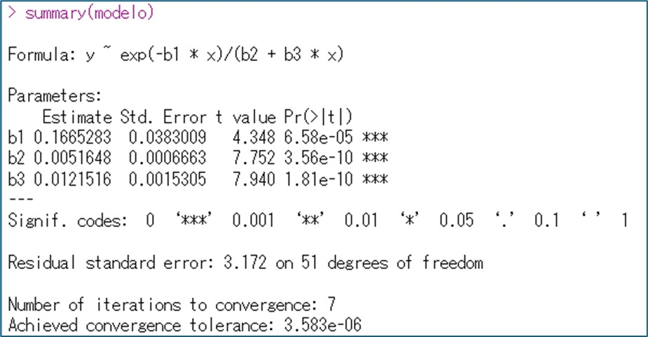
Figura 1: Coeficientes estimados y significancia estadística.
Conclusión Técnica
La implementación exitosa de este modelo demuestra que, ante relaciones no lineales complejas donde el despeje algebraico es imposible, el algoritmo Gauss-Newton proporciona una solución robusta y eficiente, siempre que se garantice una buena calidad en los datos y valores iniciales coherentes.
Código Implementado en R
# --- Librerías y Carga de Datos ---
set.seed(457)
library(readxl)
datos <- read_excel(file.choose())
datos <- data.frame(datos)
# --- Preprocesamiento ---
datos$y <- as.numeric(datos$y)
datos$x <- as.numeric(datos$x)
# --- Estimación No Lineal (NLS) ---
# Definición de la función y valores iniciales (start)
modelo_nls <- nls(
y ~ exp(-b1 * x) / (b2 + b3 * x),
data = datos,
start = list(b1 = 0.2, b2 = 0.1, b3 = 0.1),
trace = TRUE # Permite ver el proceso de convergencia
)
# --- Resumen del Modelo ---
summary(modelo_nls)
Volver a Proyectos
Modelo Precio-LASSO
Regularización y Selección de Variables para el Precio de Vivienda
1. Exploración Inicial de Datos
El análisis comienza con la carga de las variables relacionadas con el mercado inmobiliario (precio de venta, áreas, calidades, etc.).
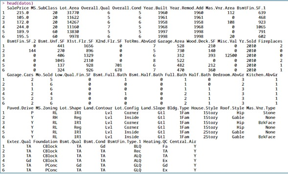
Figura 1: Vista previa de las primeras observaciones del conjunto de datos.
2. Metodología y Validación Cruzada
[cite_start]
Se realizó una división de datos (90% entrenamiento, 10% prueba) con semilla 1212[cite: 7, 8]. [cite_start]Se utilizó validación cruzada con 12 folds para garantizar la robustez de los resultados[cite: 9].
[cite_start]
Se definió una rejilla de búsqueda para el parámetro $\lambda$ desde 0.001 hasta 0.3.
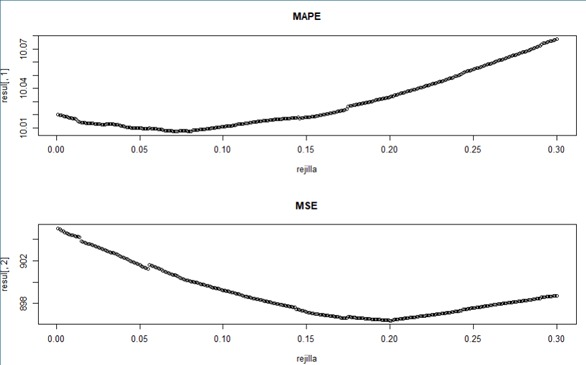
[cite_start]
Figura 2: Evolución de los errores MAPE y MSE en función de la rejilla de lambdas[cite: 15, 19, 28].
Los valores óptimos identificados fueron:
[cite_start]- $\lambda$ óptimo (MAPE): 0.073 (Error mínimo: 10.0074%).
[cite_start]- $\lambda$ óptimo (MSE): 0.201 (Error mínimo: 896.3885).
3. Resultados del Modelo LASSO
Se implementó la penalización LASSO ($\alpha = 1$) bajo la siguiente estructura matemática:
$$RSS_{LASSO} = \sum_{t=1}^{n} (y_t - \hat{y}_t)^2 + \lambda \sum_{j=2}^{k} |\beta_j|$$
A. Modelo con $\lambda = 0.073$ (MAPE Óptimo)
Con este parámetro, el modelo realiza una selección moderada de variables.
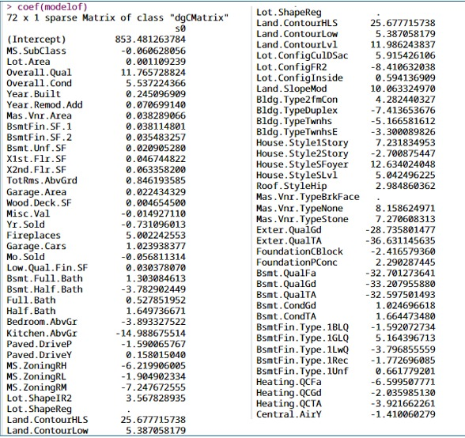
Figura 3: Coeficientes estimados para el primer lambda óptimo.
Interpretaciones clave:
- Calidad General ($\beta_{4}$): Un aumento de un punto en la calidad incrementa el precio en $11.76 USD promedio.
- Garaje ($\beta_{25}$): Un espacio adicional para auto incrementa el precio en $1.02 USD promedio.
Validación en Prueba: MAPE de 9.33% y MSE de 790.35, indicando un alto poder predictivo fuera de muestra.
B. Modelo con $\lambda = 0.201$ (MSE Óptimo)
Al ser un $\lambda$ mayor, la penalización es más severa y se eliminan 5 variables (coeficientes iguales a cero).
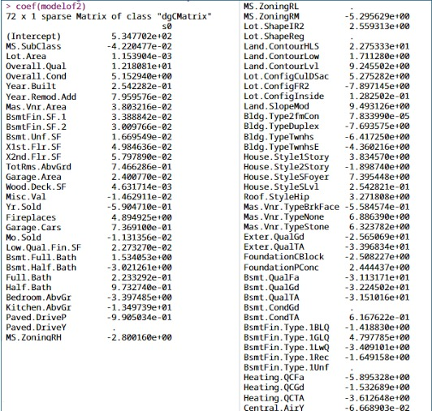
[cite_start]
Figura 4: Coeficientes estimados para el segundo lambda óptimo[cite: 73].
4. Traza de Coeficientes y Convergencia
Se analizó cómo las pendientes parciales tienden a cero a medida que aumenta la penalización $\lambda$.
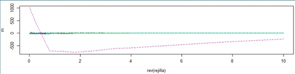
Figura 5: Evolución de los coeficientes hacia cero (Regularización).
Comportamiento del Intercepto: Teóricamente, cuando $\lambda \to \infty$, todos los $\beta_j \to 0$ y el intercepto $\beta_1$ converge al valor medio de la variable dependiente ($y_{media}$).
Código Completo en R
# Cargando librerías y preprocesamiento
library(caret)
library(glmnet)
library(readxl)
# Carga de datos
datos <- read_excel(file.choose())
datos <- na.omit(datos)
datos <- data.frame(datos)
datos$SalePrice <- datos$SalePrice/1000
modelo_inicial <- lm(SalePrice ~., data=datos)
# Matrices para glmnet
X <- model.matrix(SalePrice ~ ., datos)[, -1]
Y <- datos$SalePrice
# Partición de datos (90/10)
set.seed(1212)
idx <- sample(1:nrow(datos), size = 0.1 * nrow(datos))
entrena <- datos[-idx, ]
prueba <- datos[idx, ]
# Configuración de validación cruzada (12 folds)
pliegues <- createFolds(entrena$SalePrice, k = 12, list = TRUE)
# Función de evaluación para la rejilla
seleccion <- function(l) {
evaluacion <- function(s) {
mod <- glmnet(as.matrix(entrena[-s, -1]), entrena[-s, 1], alpha = 1, lambda = l)
p <- predict(mod, newx = as.matrix(entrena[s, -1]))
mape <- 100 * mean(abs(entrena[s, 1] - p) / entrena[s, 1])
mse <- mean((entrena[s, 1] - p)^2)
return(c(mape, mse))
}
res <- lapply(pliegues, evaluacion)
promedio <- apply(do.call(rbind, res), 2, mean)
return(promedio)
}
# Ejecución de la rejilla
rejilla <- seq(0.001, 0.3, 0.001)
resultados <- sapply(rejilla, seleccion)
resul <- t(resultados)
# Visualización de errores
par(mfrow=c(2,1))
plot(rejilla, resul[,1], main="Curva MAPE", type="l", col="purple")
plot(rejilla, resul[,2], main="Curva MSE", type="l", col="blue")
# Identificación de Lambdas óptimos
optimo_idx <- apply(resul, 2, which.min)
l_mape <- rejilla[optimo_idx[1]]
l_mse <- rejilla[optimo_idx[2]]
# Modelo Final 1 (Lambda MAPE)
modelof <- glmnet(as.matrix(entrena[,-1]), entrena[,1], alpha=1, lambda=l_mape)
print(coef(modelof))
# Modelo Final 2 (Lambda MSE)
modelof2 <- glmnet(as.matrix(entrena[,-1]), entrena[,1], alpha=1, lambda=l_mse)
print(coef(modelof2))
# Gráfico de Traza
rejilla_traza <- seq(0.01, 10, 0.01)
mod_traza <- glmnet(as.matrix(entrena[,-1]), entrena[,1], alpha=1, lambda=rejilla_traza)
matplot(rev(rejilla_traza), t(as.matrix(coef(mod_traza))[-1,]), type="l",
main="Traza de Coeficientes LASSO", xlab="rev(Lambda)", ylab="Coeficientes")
Volver a Proyectos
Análisis de Datos de Panel
Inferencia sobre estructuras Longitudinales (Países/Empresas)
1. Estructura y Control de Heterogeneidad
Este modelo permite controlar la heterogeneidad inobservable que es constante en el tiempo. Se analizó un panel balanceado para identificar el impacto de variables explicativas sobre un outcome específico, aislando efectos individuales.
Test de Hausman:
Se ejecutó el contraste de Hausman para evaluar la correlación entre los errores y las variables explicativas, determinando que el modelo de Efectos Fijos (Fixed Effects) era el más consistente para evitar sesgo por variables omitidas.
2. Código de Estimación
library(plm)
# Estimación de Efectos Fijos (Within)
fe_model <- plm(y ~ x1 + x2, data = pdata, model = "within")
# Estimación de Efectos Aleatorios
re_model <- plm(y ~ x1 + x2, data = pdata, model = "random")
# Test de Hausman
phtest(fe_model, re_model)
Sobre Mí
¡Hola, soy David Rubio!, estudiante de Economía en la Universidad de Antioquia, actualmente en séptimo semestre. Mi pasión reside en la intersección entre la teoría económica, la econometría, en general, toda la ciencia de datos.
Me especializo en el uso de herramientas como R, Python, entre otras. Así mismo, cuento con formación en matemática, estadística y, por supuesto, economía, o sea, juntando estas, una sólida formación en Econometría.
UdeA
Medellín, CO